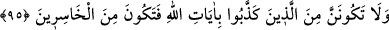

ehl-i kitaptan sor.” demektir.
Burada hitabın Hz. Peygamber (s.a.)’e olduğu, fakat ümmetinin kastedildiği de
söylenmiştir. Çünkü O, kendisine indirilen şey konusunda şek ve şüphelerden
korunmuştur, mâsumdur. Büyük bir sultanın bir komutanı ve bu komutanın emri altında
bir grup varsa, sultan bu gruba bir şey emretmek istediğinde genellikle emrini o gruba
değil başlarına tayin ettiği komutana tevcih eder ki verdiği emir daha tesirli olsun.
Âyetteki hitap işiten herkes için de olabilir. Şöyle ki: “Ey duyan kişi, eğer
peygamberimizin lisânından sana indirdiğimiz şeylerden şüphede isen... ” demek olur.
Burada dinî konularda herhangi bir şüphe içerisinde bocalayanların ilim ehline
giderek bu problemini halletmeye çalışması gerektiğine de dikkat çekilmektedir.
Kendinde böyle bir vesvese sezince vakit geçirmeden
Hakk’a dön, tevbe et, hemen secdeye kapan.
Secde yerini akan göz yaşlarınla ıslat
“Allah’ım sen beni bu şüpheden kurtar.” diye niyâzda bulun.
Bundan Hakk’ın muradının ne olduğunu bilmedinse
İlim ehline sor ki mutmain olasın
“Andolsun sana Rabb’inden” gerçek olduğunda hiçbir şüphe olmayan “hak geldi”
ve bunun geldiği kesin mûcizelerle ortaya çıktı. “sakın” içinde bulunduğun kesin ve
yakînî inançta bir sarsıntı meydana getirerek “şüphecilerden olma!” Bu inancını
önceden olduğu gibi devam ettir.
Şüphecinin durumu, yalanlayıcının durumundan daha iyi olduğu için önce şüpheden
başlanarak şüphe yasaklanmış, sonra onun peşinden yalanlayanların durumuna geçilerek
Hz. Peygamber (s.a.)’in bunlardan olması yasaklanarak şöyle buyrulmuştur:
95. Ve sakın Allah’ın âyetlerini yalanlayanlardan olma, yoksa ziyana
uğrayanlardan olursun.
“Ve sakın Allah’ın âyetlerini yalanlayanlardan olma” Bu ifâde, heyecanlandırıp
teşvik kabilindendir. Bundan maksad, kendisinden yalanlama fiilinin sâdır olması
düşünülemeyecek birisinin bile bundan menedilmesini gerektirecek kadar kötü ve
mahzurlu bir davranış olunca, kendilerinden böyle bir fiil sâdır olması mümkün olan
kimselerin durumunun nasıl olacağını bildirmektir. Yine burada kâfirlerin arzuları
kursaklarında bırakılmış olmaktadır.
“Yoksa” bu davranışınla hem nefis hem de amel bakımından “ziyana uğrayanlardan
olursun.”
Bilesin ki Allah’ın âyetleri ister Kur’ân gibi vahy yoluyla gelen âyetler olsun, ister